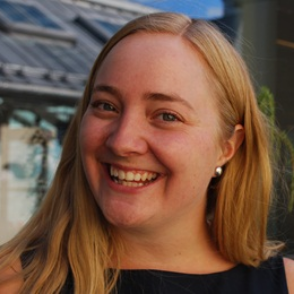

About the SPACE Team
Western Norway University of Applied Sciences

Kirsti Aksnes - Assistant Head in Drama
Kirsti is Assistant Professor in Drama at Western Norway University of Applied Science, Department of Arts Education. Her field of interest includes teacher education, Kindergarden teacher education and the arts. She has been involved in a range of EU funded projects including Creation, Global Science Opera and SPACE as part of
Research Centre of Creativities, Arts and Science in Education. Kirsti started her PhD in September 2018, with the working title “Drama-didactical learning processes and sustainable digital tools in the Kindergarden”. Her PhD is part of the Kindergarden project
DigiSus.